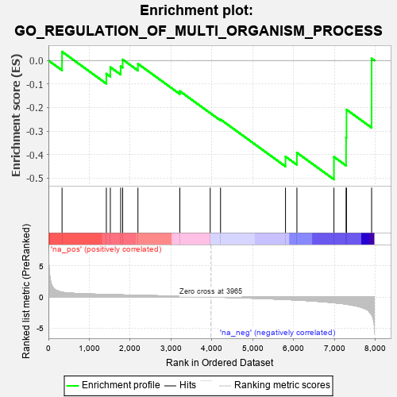
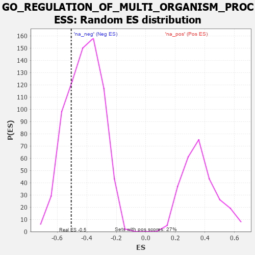

| | | Dataset | 7d |
| Phenotype | NoPhenotypeAvailable |
| Upregulated in class | na_neg |
| GeneSet | GO_REGULATION_OF_MULTI_ORGANISM_PROCESS |
| Enrichment Score (ES) | -0.50520086 |
| Normalized Enrichment Score (NES) | -1.2095828 |
| Nominal p-value | 0.23278236 |
| FDR q-value | 0.6147828 |
| FWER p-Value | 1.0 |
Table: GSEA Results Summary

Fig 1: Enrichment plot: GO_REGULATION_OF_MULTI_ORGANISM_PROCESS
Profile of the Running ES Score & Positions of GeneSet Members on the Rank Ordered List
| PROBE | GENE SYMBOL | GENE_TITLE | RANK IN GENE LIST | RANK METRIC SCORE | RUNNING ES | CORE ENRICHMENT | | 1 | WEE2 | | | 333 | 0.766 | 0.0375 | No |
| 2 | P2RY1 | | | 1416 | 0.407 | -0.0564 | No |
| 3 | INHBB | | | 1514 | 0.388 | -0.0284 | No |
| 4 | AGO2 | | | 1767 | 0.343 | -0.0246 | No |
| 5 | FMR1 | | | 1816 | 0.334 | 0.0040 | No |
| 6 | C1QBP | | | 2189 | 0.278 | -0.0140 | No |
| 7 | PRDX4 | | | 3214 | 0.120 | -0.1303 | No |
| 8 | GLRA1 | | | 3957 | 0.001 | -0.2234 | No |
| 9 | TIMP1 | | | 4209 | -0.043 | -0.2505 | No |
| 10 | ADA | | | 5798 | -0.405 | -0.4081 | No |
| 11 | CALR | | | 6077 | -0.499 | -0.3915 | No |
| 12 | PLB1 | | | 6983 | -0.925 | -0.4095 | Yes |
| 13 | CIB1 | | | 7280 | -1.152 | -0.3274 | Yes |
| 14 | ASTL | | | 7290 | -1.159 | -0.2086 | Yes |
| 15 | PLCB1 | | | 7904 | -2.841 | 0.0084 | Yes |
Table: GSEA details [plain text format]

Fig 2: GO_REGULATION_OF_MULTI_ORGANISM_PROCESS: Random ES distribution
Gene set null distribution of ES for GO_REGULATION_OF_MULTI_ORGANISM_PROCESS